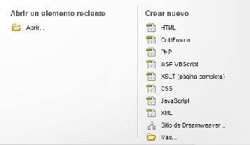
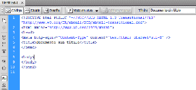

Guía de aprendizaje
Dreamweaver CS4
Tutorial 1. Crear una página web para alquilar un apartamento
Desarrollo del tutorial: paso 2 de 17

Para ello seleccionaremos la vista de Código y veremos lo que aparece en la imagen de la derecha.
En total, Dreamweaver ha escrito nueve líneas de código (nótese que hay una partida en dos).
Vamos a crear un nuevo documento donde haremos nuestra primera página. Para ello, en el menú seleccionamos Archivo - Nuevo… y en la ventana que aparece seleccionamos HTML.
También podemos hacer clic en Crear nuevo HTML de la ventana de presentación de Dreamweaver.
Por defecto, Dreamweaver presenta la vista de diseño, con lo que se nos presentará una pantalla en blanco. Sin embargo, es interesante ver qué ha puesto Dreamweaver en esta página inicial.
